India Banking Pulse — 11 September 2026
A focused view of price trends, valuations, market breadth and pullbacks across India's banking sector.
Contents
- Market at a Glance
- Nifty Bank
- Nifty Private Bank
- Nifty PSU Bank
- Market Breadth by Index
- Sources
- Disclaimer
Market at a Glance
A compact comparison of indices.
- Free-float market cap: The value of shares available for public trading, measured in ₹ lakh crore. Each value includes its source date in the index section below.
- 3Y P/E position: Compares today's P/E with the index's own three-year history. A low percentile is near its three-year low; a high percentile is near its three-year high.
- Stocks up today: Shows market breadth—the percentage of stocks in the index that rose today.
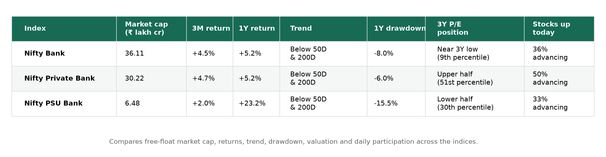
Nifty Bank
What it represents: Large, liquid Indian banks from the public- and private-sector banking industry.
Close: 56,606.55 · Day change: +0.24% · 50D MA 57,463.55 (-1.49%) · 200D MA 57,373.56 (-1.34%) · Free-float market cap: ₹36.11 lakh crore (as of 11 September 2026)
Price
Price return shows how much the index rose or fell over each period. Current read — 3M: +4.5% · 1Y: +5.2% · 3Y: +26.1%.
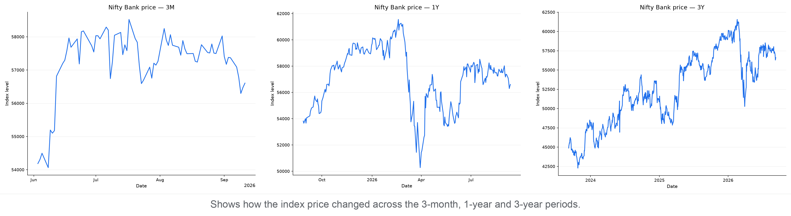
P/E
P/E compares index price with constituent earnings; the percentile shows where today's valuation sits within each period.
3M: 13.39 versus 13.73 median, 4th percentile (lower end)
1Y: 13.39 versus 14.85 median, 2nd percentile (lower end)
3Y: 13.39 versus 14.93 median, 9th percentile (lower end)
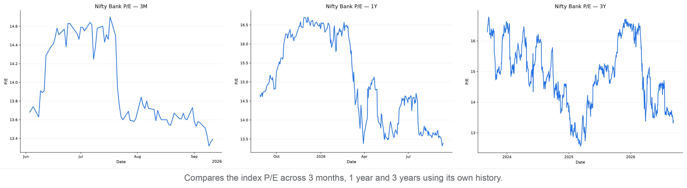
P/B
P/B compares index price with constituent book value; the percentile shows where today's P/B sits within each period.
3M: 1.70 versus 1.76 median, 6th percentile (lower end)
1Y: 1.70 versus 1.99 median, 2nd percentile (lower end)
3Y: 1.70 versus 2.29 median, 1st percentile (lower end)
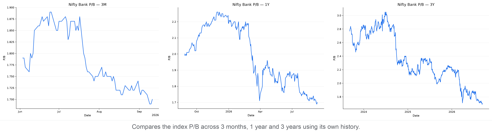
Moving Averages
The 50-day average shows the shorter trend and the 200-day average shows the longer trend. Current read — -1.5% versus the 50-day average; -1.3% versus the 200-day average; the 50-day is above the 200-day (bullish alignment).
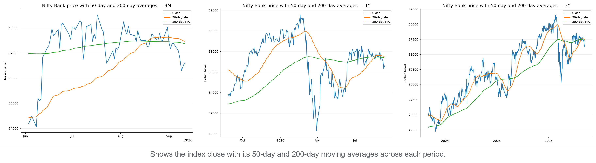
Support & Resistance
Zones use confirmed five-bar swing points clustered into 0.5% price bands; distances are measured from today's close.
3M: support 55,882–56,165 (0.8% below); resistance 56,860–57,598 (0.4% above)
1Y: support 55,694–56,165 (0.8% below); resistance 56,682–57,472 (0.1% above)
3Y: support 55,816–56,476 (0.2% below); resistance 56,682–57,505 (0.1% above)
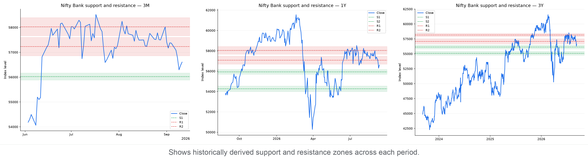
Drawdown
Drawdown is the percentage below the highest close reached within each chart's own period. Current pullback in context:
3M: Now 3.3% below peak · Worst 3.8% · At this level or lower on 6% of 72 trading days
1Y: Now 8.0% below peak · Worst 18.3% · At this level or lower on 25% of 258 trading days
3Y: Now 8.0% below peak · Worst 18.3% · At this level or lower on 15% of 742 trading days
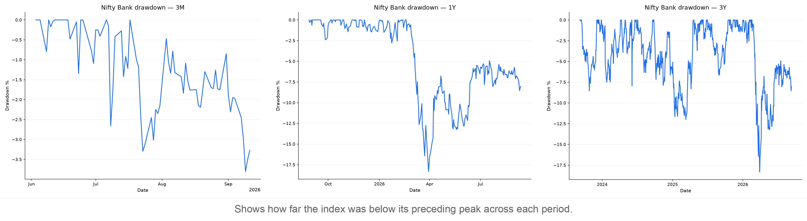
Nifty Private Bank
What it represents: Indian banks owned and operated in the private sector.
Close: 27,436.00 · Day change: +0.48% · 50D MA 27,646.43 (-0.76%) · 200D MA 27,567.26 (-0.48%) · Free-float market cap: ₹30.22 lakh crore (as of 11 September 2026)
Price
Price return shows how much the index rose or fell over each period. Current read — 3M: +4.7% · 1Y: +5.2% · 3Y: +17.5%.
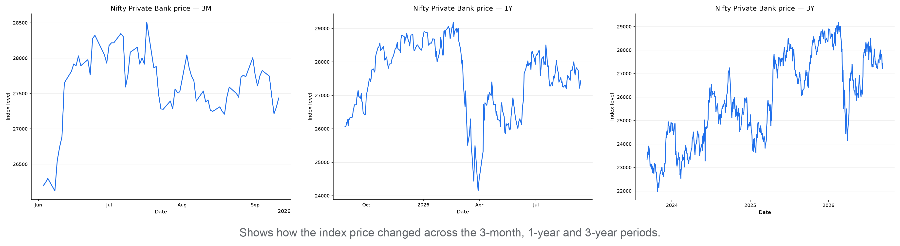
P/E
P/E compares index price with constituent earnings; the percentile shows where today's valuation sits within each period.
3M: 17.09 versus 17.29 median, 25th percentile (below the middle)
1Y: 17.09 versus 18.40 median, 9th percentile (lower end)
3Y: 17.09 versus 17.07 median, 51st percentile (above the middle)
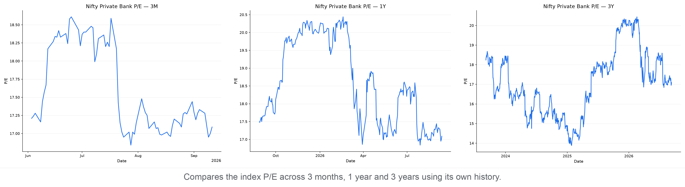
P/B
P/B compares index price with constituent book value; the percentile shows where today's P/B sits within each period.
3M: 1.97 versus 2.04 median, 17th percentile (lower end)
1Y: 1.97 versus 2.14 median, 7th percentile (lower end)
3Y: 1.97 versus 2.31 median, 2nd percentile (lower end)
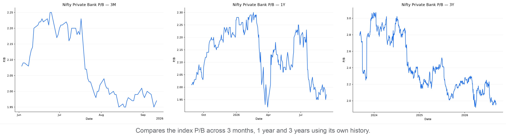
Moving Averages
The 50-day average shows the shorter trend and the 200-day average shows the longer trend. Current read — -0.8% versus the 50-day average; -0.5% versus the 200-day average; the 50-day is above the 200-day (bullish alignment).
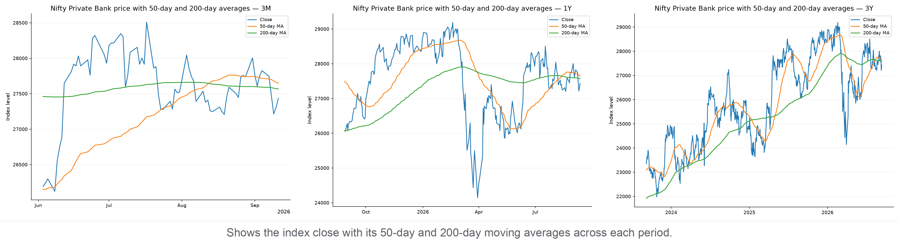
Support & Resistance
Zones use confirmed five-bar swing points clustered into 0.5% price bands; distances are measured from today's close.
3M: support 26,946–27,161 (1.0% below); resistance 27,627–27,931 (0.7% above)
1Y: support 27,194–27,402 (0.1% below); resistance 27,627–27,978 (0.7% above)
3Y: support 27,143–27,402 (0.1% below); resistance 27,627–27,978 (0.7% above)
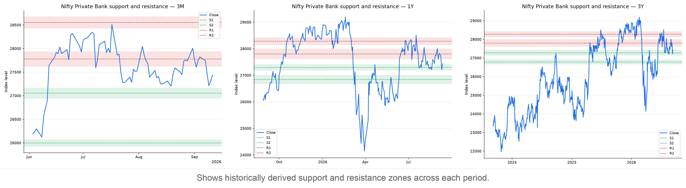
Drawdown
Drawdown is the percentage below the highest close reached within each chart's own period. Current pullback in context:
3M: Now 3.8% below peak · Worst 4.6% · At this level or lower on 21% of 72 trading days
1Y: Now 6.0% below peak · Worst 17.3% · At this level or lower on 31% of 259 trading days
3Y: Now 6.0% below peak · Worst 17.3% · At this level or lower on 34% of 747 trading days
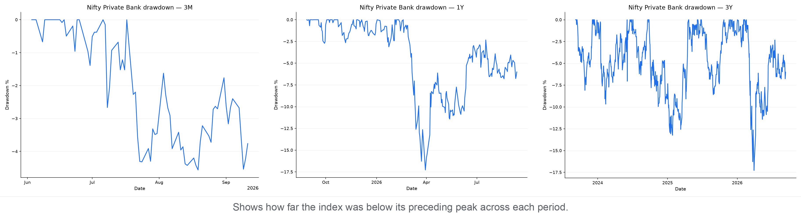
Nifty PSU Bank
What it represents: Indian banks in which the government holds a controlling interest.
Close: 8,349.90 · Day change: -0.62% · 50D MA 8,491.38 (-1.67%) · 200D MA 8,599.16 (-2.90%) · Free-float market cap: ₹6.48 lakh crore (as of 11 September 2026)
Price
Price return shows how much the index rose or fell over each period. Current read — 3M: +2.0% · 1Y: +23.2% · 3Y: +78.0%.
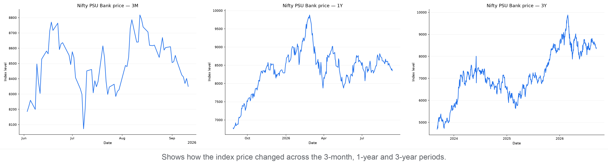
P/E
P/E compares index price with constituent earnings; the percentile shows where today's valuation sits within each period.
3M: 7.51 versus 7.85 median, 1st percentile (lower end)
1Y: 7.51 versus 8.22 median, 6th percentile (lower end)
3Y: 7.51 versus 8.01 median, 30th percentile (below the middle)
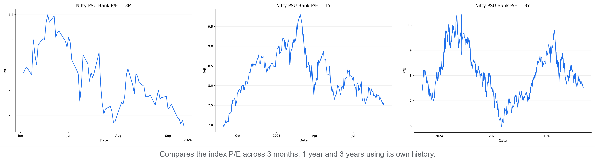
P/B
P/B compares index price with constituent book value; the percentile shows where today's P/B sits within each period.
3M: 1.15 versus 1.19 median, 11th percentile (lower end)
1Y: 1.15 versus 1.32 median, 8th percentile (lower end)
3Y: 1.15 versus 1.29 median, 13th percentile (lower end)
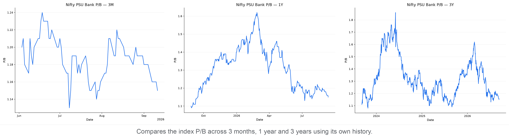
Moving Averages
The 50-day average shows the shorter trend and the 200-day average shows the longer trend. Current read — -1.7% versus the 50-day average; -2.9% versus the 200-day average; the 50-day is below the 200-day (bearish alignment).
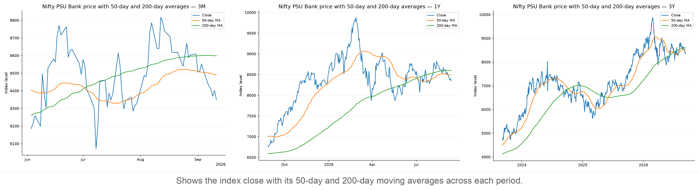
Support & Resistance
Zones use confirmed five-bar swing points clustered into 0.5% price bands; distances are measured from today's close.
3M: support 8,301–8,343 (0.1% below); resistance 8,398–8,445 (0.6% above)
1Y: support 8,237–8,343 (0.1% below); resistance 8,397–8,472 (0.6% above)
3Y: support 8,237–8,343 (0.1% below); resistance 8,397–8,472 (0.6% above)
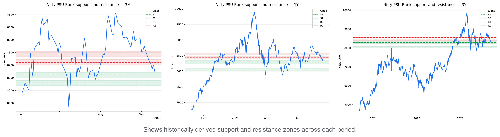
Drawdown
Drawdown is the percentage below the highest close reached within each chart's own period. Current pullback in context:
3M: Now 5.3% below peak · Worst 8.0% · At this level or lower on 8% of 72 trading days
1Y: Now 15.5% below peak · Worst 20.3% · At this level or lower on 15% of 259 trading days
3Y: Now 15.5% below peak · Worst 29.7% · At this level or lower on 26% of 747 trading days
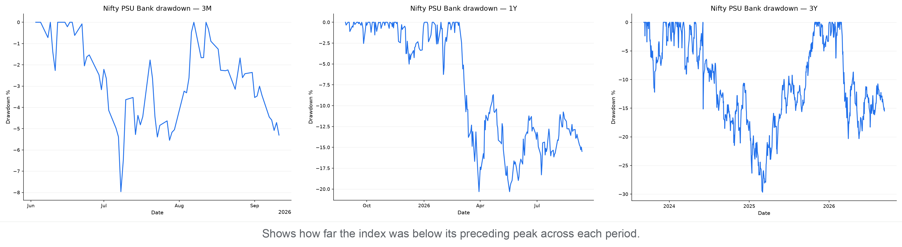
Market Breadth by Index
Market breadth counts how many constituents rose, fell, or were unchanged. It shows whether an index move has broad participation or is being driven by relatively few stocks; it is useful confirmation, not a prediction.
- Nifty Bank: 5 advanced, 8 declined, 1 unchanged — broadly negative (A/D ratio 0.62).
- Nifty Private Bank: 5 advanced, 4 declined, 1 unchanged — mixed (A/D ratio 1.25).
- Nifty PSU Bank: 4 advanced, 7 declined, 1 unchanged — broadly negative (A/D ratio 0.57).
Breadth Snapshot
Green shows advancing constituents, red declining constituents, and grey unchanged constituents.
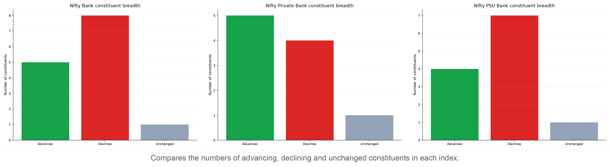
Sources
- Yahoo Finance
- Nifty Bank market data (^NSEBANK): https://finance.yahoo.com/quote/^NSEBANK
- Nifty Indices
- Historical P/E and P/B data: https://www.niftyindices.com/BackPage/getpepbHistoricaldataDBtoString
- NSE India
- Free-float market capitalization: https://www.nseindia.com/index-tracker/NIFTY%2050
- Index price history: https://www.nseindia.com/api/historicalOR/indicesHistory
- Index snapshot and market breadth: https://www.nseindia.com/api/allIndices